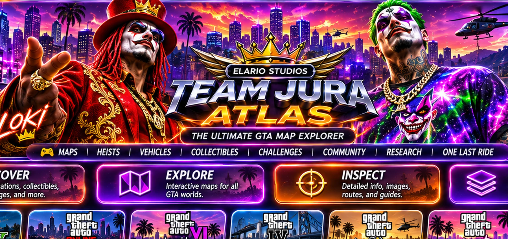

THE TEAM JURA UNIVERSE
Loki · Scaly Man · The Crew
Our characters, our adventures, and our community tribute.

Meet the crew
Loki: red-and-gold suit, red top hat, long red hair and clown-style face paint.
Scaly Man: purple-and-green galaxy outfit, short green hair and clown-style face paint.
Our story starts in Los Santos and leads toward the mystery of Leonida.
One Last Ride ↗Community memories
We want a moderated gallery for screenshots, stories, and tributes. Public submissions are planned, not enabled in this static preview.
Community & source guidelines